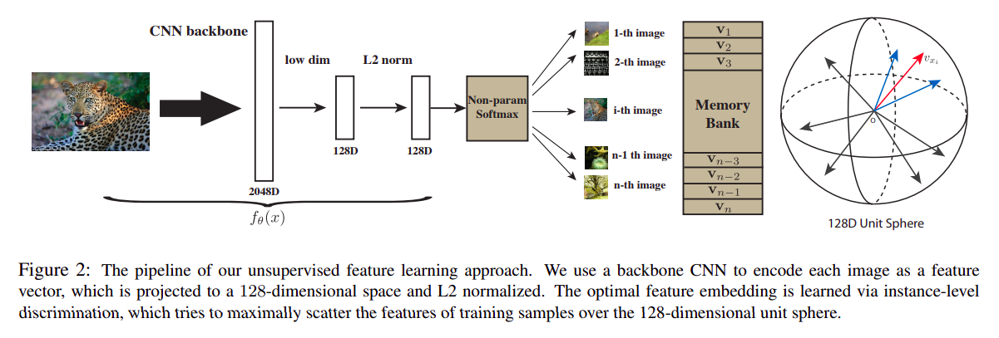

最近self-supervised learning很火，大佬Kaiming He和Hinton组都有一些成果出来，Yann Lecun也对SSL报以很高的评价；2019年的时候我曾经觉得这个领域旧瓶装新酒没什么意思，但现在SSL的思路已经在包括CV、NLP、语音甚至是RL方面都作出了不错的实验效果，或许未来哪天可能会引发DL理念的革命，就像CV中self-attention超越了卷积，就像NLP中卷积加multi-head attention超越了RNN一样
Representation learning with contrastive predictive coding
1.1. Motivation
这篇文章出自deepmind，算是contrastive-based SSL的开山之作，作者提出了一种新的无监督算法来学习数据的representation
以前人们说要无监督学习数据的representation的时候一般会想到各种generative model，比如VAE或者GAN之类的，核心思路都是搞一个神经网络出来建模数据的distribution，训练后模型可以从原始数据分布中sample新样本
这里就会遇到一个问题：如果我们的最终目的是学习一个好的representation的话，能够100%完美地建模原始数据是否是学习到一个good representation的必要条件？比如VAE要用MSE loss对原始图片数据做pixel level的回归，GAN则从理论上要求只有生成分布等于数据分布时模型才算收敛，从PGM的角度来讲，这些模型都要求100%无损地复原出原始数据分布，i.e.: 在conditional distribution $p(c|x)$中，latent variable $C$ 应当是 $X$ 的sufficient statistic
这篇blog里讲了一个很有趣的神经科学实验，人们日常生活中用得最多的纸币，大部分人未经训练很难画出纸币的各种细节，但这不影响人们看到假币时很容易从细节上判别真伪，这说明对人类来讲100%复原原始数据分布不是学习good representation的必要条件


1.2. Proposed approach
这篇文章中，作者的motivation是$C$不需要保留$X$的所有细节，我只是希望最大化$C$和$X$之间的mutual information，MI maximization应该是一个比较常规的Bayesian套路，定义是这样的
这篇文章中研究的$X$是sequential的，工程上可以把每个time step的$x_{t}$过几个共享参数的fc，由此得到$z_{t}$，然后再让所有的$z_{t}$过一个RNN就得到了context vector $c_{t}$，如图

不需要考虑$p(c)$的prior，那么上式的$p(x,c)$直接从数据集中采样即可，问题就变成了如何最大化数学期望内部的log probability，作者建模了一个parametric function $f:\mathcal{X}\times\mathcal{C}\rightarrow{\mathbb{R^{+}}}$，形式为:
很显然$f$是大于0的，作者希望用函数$f_{k}(x_{t+k},c_{t})$来reparameterize $\frac{p(x_{t+k}|c_{t})}{p(x_{t+k})}$，当数据集中有一堆sequential的正样本，训练就可以直接用NCE中的negative sampling策略来采样负样本优化mutual information，NCE见博客之前的文章: Collection of Engineering Tricks，损失函数为
作者同时还证明了
1.3. Experimental results
这篇文章的实验部分也是比较solid，作者同时在speech recognition、CV、NLP、以及RL任务上都做了实验，speech的实验看不懂不做评价，简单总结能看懂的部分
- Audio classification放了一张tSNE降维后的图，各个类别区分非常清楚
- CV的实验是在ImageNet上做的，作者用101层的ResNet作为从$X$到$Z$的映射，然后把整个图像分成若干个patch，以patch为单位输入pixel CNN做从$Z$到$C$的映射，训练结束后把context vector $c_{t}$作为线性分类器的特征，发现线性分类器可以做到48.7%的top-1 ACC和73.6%的top-5 ACC
- RL的实验使用IMPALA做的，这篇文章里的RL实验设计被三言两语一笔带过，推测可能是用了IMPALA框架中的LSTM来做从$Z$到$C$的映射，然后把contrastive loss加到RL的loss上辅助训练，实验环境为DeepMind的几个比较简单的环境，作者给出了训练期的total reward曲线，效果提升显著，但是没有报告方差，也没有在多个random seed下的实验（传统艺能
相比其他几组实验，RL算是比较特殊的，因为RL设定中$p(x)$和$p(c|x)$都是在动态变化的，因此contrastive能否在RL环境上work可以算是一个全新的问题了，你问我信不信contrastive这一套能在RL上work，我暂时持观望态度
Unsupervised Feature Learning via Non-Parametric Instance Discrimination
2.1. Motivation
- 作者认为contrastive learning可以看做是将每个样本看做一类，然后用NCE进行分类回归，从这个视角可以得到一些启发
- 作者研究的任务限定在CV，于是把DeepMind文章里那个华而不实的pixel CNN去掉了

Non-parametric classifier: 按照DeepMind文章的道理，我们最终的目标是学习一个好的representation $c_{t}$，然而$f_{k}(x_{t+k},c_{t})$居然是一个parametric function，作者认为如果$f_{k}$里面的参数太expressive的话就会影响$c_{t}$的可分性，于是就把$f_{k}$换成了一个non-parametric的形式：
其中$C$是所有样本的content vector $c_{t}$ concatenate起来的一个大matrix，$\tau$是温度系数
Memory bank: 作者认为既然 $c_t$ 的维度比 $x_t$ 低很多，那么把所有样本的 $c_t$ 都load到内存里是可取的，于是就搞出来一个叫做memory bank的东西用来存储所有的$c_{t}$，训练时每个epoch过样本的时候都依次更新membank里面的context vector，算loss时negative samples直接从memory bank中采样
Proximal regularization: 作者认为每个epoch中，每个样本”类别“只出现一次，训练会不稳定，于是在loss里加上了当前模型输出的context vector $c_t$ 与memory bank里对应存储的context vector $v_t$ 之间的MSE $||v_{t}-c_{t}||_{2}^{2}$
技术细节：第一个epoch的时候membank里没东西怎么办？直接随机初始化
2.2. 个人想法
细想其motivation是有道理的，之前的研究工作一般都会把无监督学习到的representation丢给一个linear classifier，通过linear classifier的性能来体现representation的好坏，但整个contrastive learning的过程其实完全没有体现出representation的线性可分性质
把所有的context vector都装在内存里这个idea在工业界是不可能实现的，感觉这个场景很适合上Redis
Proximal regularization听起来也比较蠢，对于RL研究者而言，用ema动态更新memory bank应该是一个更容易想到的方案
Momentum Contrast for Unsupervised Visual Representation Learning
这篇出自Kaiming He，主要任务限定在visual representation learning
2.1. Motivation
大佬是认为CV问题中constrastive learning的本质就是学习一个dynamic dictionary lookup
这里注意一个细节，无论是memory bank还是MoCo，nagative samples的encoding过程都是不参与back-propagation的